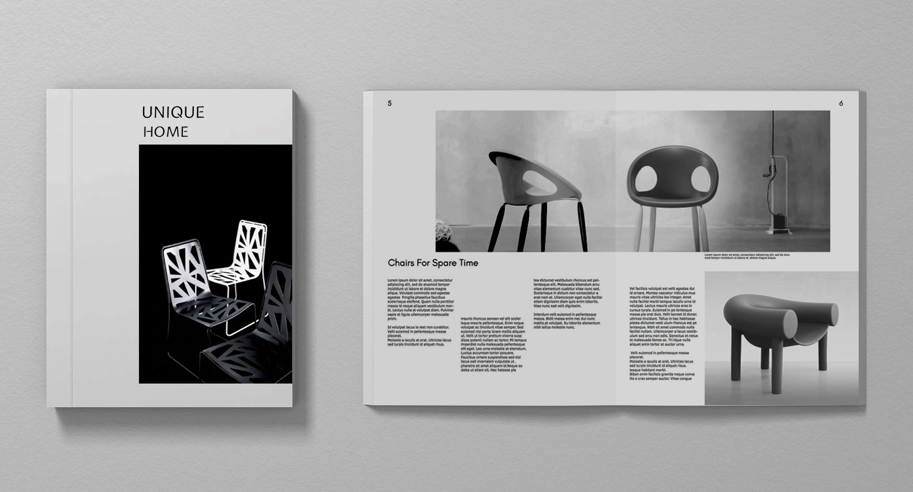
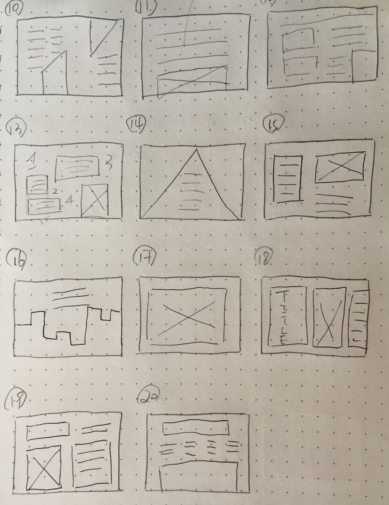
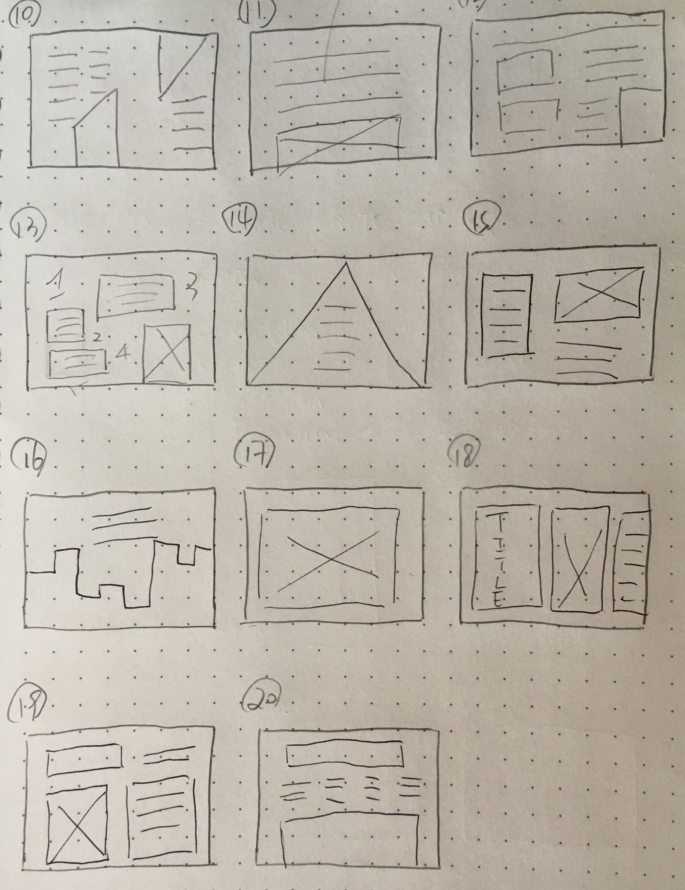
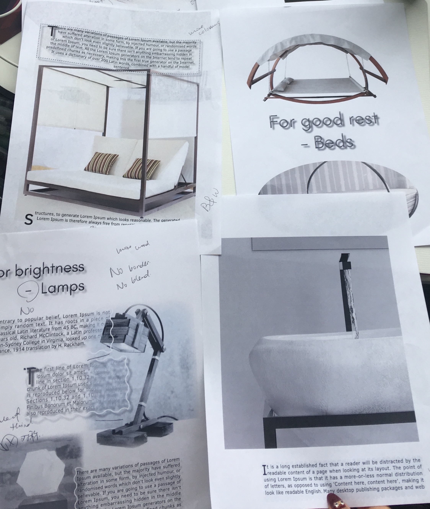
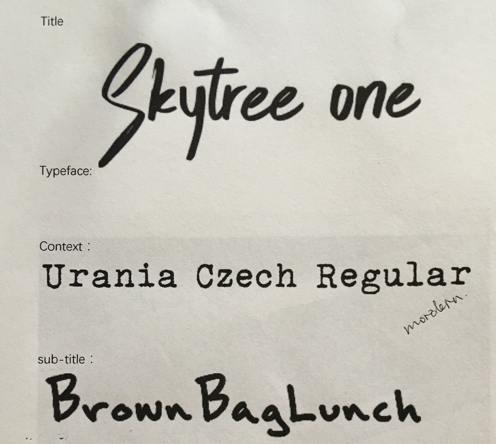

Graphic Design
Fall 2018
This project is designed to give a chance to practice the layout, communication and typographic skills. We need to use the composition technique include: Grid or non-grid based composition, visual hierarchy, balance, use of whitespace, article flow and focus. The magazine focues on consistency in print layouts, aesthetic unity and readability,
flow and type-setting considerations.
Brainstorming and Inspiration
For the first step of the brainstorming, I need to choose 2-4 fonts for my article, come up with the article content which include a title for your article,
a sub-title for your article and at least 3 main sub-headings that might appear in the article. Then sketch 20 possible print layouts, these sketches should be no wider than 5cm (2") across. I did lots of research about the magazine layout to find the inspiration, then depends on what I have read before, briefly sketch some sketches.
 

First Draft
According to the sketch that I draw, I chose some of them that both figure and text accommodate in one page and there is enough space in the text area that I can alter the text position to figure out a good composition for each page. As the image shows below,
the first draft looks so unprofessional and boring which is not a magazine layout.


First Draft
After talking with my instructor, I got a few suggestions about the problem existed in my first draft and they help me solved the problem that I encountered, I tried to follow a professional magazine layout to create my own one. I found that white space is a crucial element in graphic design that can provide advanced visual quality for your graphic design. The context does not need to fill in all the space. Moreover, I learnt some magazine design techniques like the position of the page number,
the picture chooses and the whole style should be consistent.